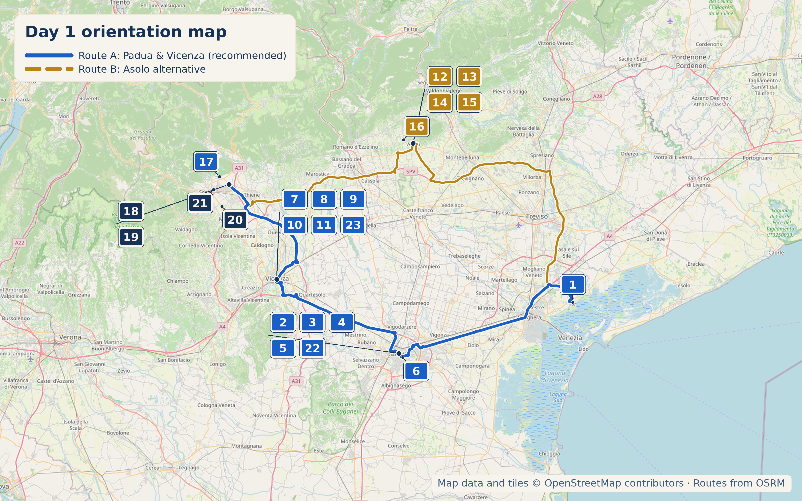

%2001.jpg)
Overview
10 September 2026 is a Thursday. This is arrival day after a long-haul flight — everything past the airport is optional, and if the flight runs late or the group is flattened, both source drafts this page was built from agree: skip straight to Santorso and save these towns for another visit.

Stops — Route A: Padua & Vicenza (recommended default)
- Why stop: One of the largest squares in Europe — an elliptical island ringed by a moat and 78 statues, with the domes of the Basilica di Santa Giustina behind it. A genuinely striking civic space, not a generic piazza.
- Time required: 20–30 min to walk the ring
- Why stop: An 800-year-old covered market hall — one of Europe's oldest still working — with the astronomical clock tower (Torre dell'Orologio) and loggia arcades free to walk through even without the paid interior. Underneath, Sotto il Salone is a genuine 16th-century salumai-guild market: cheese, salumi, bread, fruit for the car.
- Time required: 45–60 min for the market and exterior; add 45 min for the paid frescoed hall/undercroft (€8/€6, Tue–Sun 9:00–19:00, closed Mon)
- How did you find this: Beyond the obvious cheese-and-salumi browse, look for the dedicated horse-meat butcher stall inside — sfilacci di cavallo padovani, a Slow Food Arca del Gusto product (thin smoked horse-meat shreds, sweet-smoky, served with shaved grana and lemon). Genuinely local, not a tourist snack.
- Why stop: Opened 1831, "the café without doors" — open non-stop until 1916, and a real meeting place for 19th-century intellectuals and Risorgimento figures.
- Order: Caffè alla menta ("caffè Pedrocchi") — espresso with mint cream and syrup, dusted with cocoa in green-white-brown layers echoing the café's historic rooms. Invented here in 2002 by barman Alberto Birollo, and now the house signature.
- Why stop: Right on Prato della Valle itself, yet almost nobody goes in — a private collection of magic lanterns, hand-painted 18th/19th-century projection glass, optical toys, and early cameras. Literally "pre-cinema," the visual-culture ancestor of movies.
- Time required: 20–30 min
- Why stop: Luigi Biasetto is a world pastry champion and one of the defining names in modern Italian pastry — try a cannoncino, millefoglie, or a house signature cake.
- Practical note: About 2.3 km / 8–10 min drive south-east of the historic centre, not on the walking route between Prato della Valle and the market — a deliberate small detour, not a stumble-into stop.
%20-%20Facade.jpg)
- Why stop: Padua's most-visited site and one of the great pilgrimage churches of the Catholic world — an odd architectural mashup of Romanesque, Gothic, and Byzantine domes that somehow reads as one building. This was genuinely missing from an earlier draft of this page, which is a real gap: it sits about 700m south-east of Prato della Valle, an easy add rather than a detour.
- The quirky part: inside, the Cappella delle Reliquie holds Saint Anthony's tongue and vocal cords, both found perfectly preserved when his tomb was opened in 1263 (and the vocal cords re-confirmed intact as recently as 1982) — kept as relics specifically because he was famed as a preacher. Genuinely odd, not embellished.
- Time required: 45–60 min
%20-%20facade%20on%20Piazza%20dei%20signori.jpg)
- Why stop: Palladio's first major public commission and Vicenza's civic centrepiece, ringed by Corso Palladio's arcades — compact and walkable without an architecture lecture.
- Time required: 45–60 min to see the piazza, facade, and a stretch of Corso Palladio; add €6 and 45 min for the rooftop terrace
- Optional, not shown on the map — verify hours before adding: Teatro Olimpico (Palladio's last work, the world's oldest surviving indoor theatre, Piazza Matteotti, Tue–Sun 9:00am–5:00pm) and the Palladian villas Valmarana ai Nani and La Rotonda both have genuinely inconsistent September opening schedules in current sources — call ahead (Teatro Olimpico +39 0444 222800) rather than build the day around them.
- Why stop: Palladio's unfinished Palazzo Porto, popularly nicknamed the "House of the Devil" — local legend says only the devil could have built something so grand so quickly, or built it and left it permanently incomplete. A two-minute story-stop, not a formal visit.
- Time required: 5–10 min
- Why stop: A pond ringed by turtles swimming around a small classical temple, in a lush 19th-century park about 10 minutes' walk from Piazza dei Signori — an easy, genuinely off-the-obvious-path stop if there's a stretch-the-legs moment to fill.
- Time required: 15–20 min
Lunch — Vicenza (Route A)

Self-service, honor-system billing, no real table service — but a genuine only-in-Vicenza institution, cheap and consistently well-liked. Order baccalà alla vicentina with polenta if it's on. Open Thursday, no closure risk.
On Gambero Rosso's actual list of Vicenza's best baccalà alla vicentina — baccalà mantecato, bigoli in salsa di baccalà, polenta e baccalà. The sharper food-guide pick if Righetti's queue is long.
Also Gambero Rosso–listed; whipped baccalà mantecato in three variations, including a squid-ink version. Right on Corso Palladio, easy to combine with the walk.
Stops — Route B: Asolo (alternative, +45–60 min)

- Why stop: "The town of a hundred horizons" — a walled hill town where Eleonora Duse and explorer Freya Stark both chose to live and are buried, with a café culture that's genuinely old rather than dressed up to look that way. Piazza Garibaldi's 16th-century fountain is the Fontana Maggiore — an earlier draft of this page called it "Fontana Zen," which doesn't check out against any source and looks like a drafting error.
- The climb: ~20 minutes on foot up to the Rocca fortress, views to the Dolomites and, on a clear day, Venice.
- Honest flag: The Rocca's managed/paid access runs Saturday, Sunday and public holidays only — a Thursday visit means the exterior walk and viewpoint, not a ticketed interior. Call ahead (+39 0423 952313) to confirm before building the day around it.
- Time required: 1.5–2 hours for the piazza, climb, and viewpoint
- Parking: Cars aren't allowed inside the walls — use the paid lots just below the historic centre and walk up.
- Why stop: Eleonora Duse's house (now a private residence — exterior and D'Annunzio-commissioned plaque only, not visitable inside) and, a short walk on, her grave and Freya Stark's, both at Cimitero di Sant'Anna. Buried 12 May 1924 under a simple stone facing Monte Grappa, per her wishes.
- Time required: 15–20 min combined, if walking past both
Coffee & Lunch — Asolo (Route B)
The town's meeting point since the Duse/Stark era, right on the main piazza.
In the centre — Veneto cicchetti, spezzatino, baccalà alla vicentina, trippe, lumache. Genuinely well-reviewed with a minority of complaints about lukewarm dishes on off nights — an honest mixed-but-positive picture.
Family-run by the Serafin family since 1994, seasonal Trevigiano cooking — sausage-and-radicchio polpettine, polenta. €36–45/person, book ahead, 45 covers. A short drive from central Asolo but the strongest-reviewed option on this route.
Local Speciality
Padua/Vicenza (Route A): sfilacci di cavallo padovani (smoked horse-meat shreds, Sotto il Salone), bigoli, duck ragù, and — the whole point of the Vicenza stop — baccalà alla vicentina with polenta.
Asolo (Route B): cicchetti; Asolo Prosecco Superiore DOCG, a specific protected denomination covering the hills around Asolo/Montello, distinct from generic Prosecco DOC; and the local "Prugna" plum liqueur — a real, locally-associated product, though sourced more thinly than the Prosecco.
What to Buy
Sotto il Salone (Route A): cheese, salumi, bread, fruit for the car, or a paper cone of sfilacci di cavallo eaten standing at the counter. Vicenza: baccalà alla vicentina vacuum-packed from a city-centre gastronomia, or artisan ceramics from Barettoni Manifattura Ceramiche Artistiche, a family workshop dating to 1685. Asolo (Route B): a bottle of Asolo Prosecco Superiore DOCG or Prugna liqueur from an enoteca on the piazza.
Hidden Gem
Museo del Precinema, right on Prato della Valle: a private collection of magic lanterns and hand-painted projection glass that almost nobody visiting Padua ever walks into, despite sitting on the day's flagship square.
Cool, Interesting & Quirky
Casa del Diavolo in Vicenza — Palladio's unfinished Palazzo Porto, nicknamed for a legend that only the devil could have built it so fast, or finished a building he never really intended to complete.
Eleonora Duse and Freya Stark, an actress and an explorer a generation apart, both chose to spend their final years in the same small hill town and are buried a few steps from each other in Asolo's Cimitero di Sant'Anna.
Santorso — Tonight's Base

An unpretentious village at the foot of Monte Summano, a solitary 1,296m limestone peak with pilgrimage history back to a pre-Roman cult site dedicated to Pluto/Summus Manium — nothing manufactured for tourists, a genuine foothill town to land softly in. Correction to an earlier draft: the summit isn't simply "a 16m steel Christ statue" — it's a 16.5m concrete cross erected in 1922, with a stainless-steel figure of the crucified Christ added in 1993.
A working sanctuary dating to ~1300, rebuilt 1452, remodelled in the 18th century by Ottone Calderari — a nice architectural through-line for a day themed on Palladian towns. Below it, the lower stretch of the Sentiero dei Girolimini toward Bocca Lorenza cave is a genuine option for anyone not wiped out by travel.
Accommodation
A small family farm at the foot of Monte Summano; dinner is largely what they raise and grow themselves — home-cured pork, rabbit, garden vegetables, own fruit. Reviewers specifically praise the km-0 cooking and attentive staff.
Also at the foot of Monte Summano, family-run since 1994, similar home cooking. Garden and children's play area confirmed; a pool is mentioned in some listings but not independently confirmed — don't count on it without asking directly.
Four-star villa-style property with restaurant and garden. Reviewers specifically praise the fried fish and a "fillet à la Rossini," mixing rustic Vicenza game with Venetian lagoon fish — a genuinely solid higher-comfort pick if a fuller-service stay is wanted.
Reliable modern base close to Santorso with on-site restaurant and straightforward parking — use if the agriturismos are full.
Today's Route & Timing
Optional stop maps: Teatro Olimpico Google Route B: Asolo Google Santuario di Sant'Orso Google
Print timing summary: suggested 9:00am car departure from Venice Marco Polo Airport. Direct driving-only baseline to Santorso is ≈1h15. Route A (Padua + Vicenza, with lunch) adds 4h06–5h06; Route B (Asolo, with lunch) adds 2h38–3h08 instead — pick one, not both. Museo del Precinema adds 20–30 min; the Casa del Diavolo detour adds 5–10 min; Teatro Olimpico adds 45–60 min (hours permitting); lingering at the Rocca viewpoint adds 15–20 min; the Sant'Orso/Girolimini trailhead stop adds 20–30 min. Under 8 hours is a comfortable day; 8–10 hours is a long day; over 10 hours is very long and a sign to drop an option — on arrival day, err toward comfortable.
Day 1 route map

Numbered points of interest
- Venice Marco Polo Airport StartVia Galileo Galilei 30/1, 30173 Venezia VE, Italy
GPS: 45.5035386, 12.3425797 - Prato della Valle Route A / stopPrato della Valle, 35123 Padova PD, Italy
GPS: 45.3984714, 11.8751207 - Palazzo della Ragione & Sotto il Salone Route A / marketPiazza delle Erbe, 35122 Padova PD, Italy
GPS: 45.4072498, 11.8752231 - Caffè Pedrocchi Route A / coffeeVia VIII Febbraio 15, 35122 Padova PD, Italy
GPS: 45.4076922, 11.8770946 - Museo del Precinema Route A / hidden gemPrato della Valle 1/A, 35123 Padova PD, Italy
GPS: 45.4001955, 11.8759224 - Pasticceria Biasetto Route A / pastryVia Jacopo Facciolati 12, 35126 Padova PD, Italy
GPS: 45.3992373, 11.8857335 - Piazza dei Signori & Basilica Palladiana Route A / stopPiazza dei Signori, 36100 Vicenza VI, Italy
GPS: 45.5469672, 11.5469575 - Casa del Diavolo (Palazzo Porto) Route A / quirkyPiazza Castello, 36100 Vicenza VI, Italy
GPS: 45.5454098, 11.5417460 - Righetti Route A / lunchPiazza del Duomo 3, 36100 Vicenza VI, Italy
GPS: 45.5457569, 11.5443786 - Osteria Il Cursore Route A / lunch alternateStrada Pozzetto 10, 36100 Vicenza VI, Italy
GPS: 45.5446419, 11.5484005 - Il Ceppo Route A / lunch alternateCorso Andrea Palladio 196, 36100 Vicenza VI, Italy
GPS: 45.5490457, 11.5485427 - Piazza Garibaldi, Fontana Maggiore & Rocca di Asolo Route B / stopPiazza Garibaldi, 31011 Asolo TV, Italy
GPS: 45.8022047, 11.9134666 - Casa dell'Arco & Cimitero di Sant'Anna Route B / Duse & StarkVia Canova, 31011 Asolo TV, Italy
GPS: 45.8025475, 11.9102238 - Caffè Centrale Cornaro Route B / coffeePiazza Garibaldi, 31011 Asolo TV, Italy
GPS: 45.8023434, 11.9135387 - Osteria al Bacaro Route B / lunchVia Robert Browning, 31011 Asolo TV, Italy
GPS: 45.8015364, 11.9143170 - La Trave Route B / lunch, stronger pickVia Bernardi 15, Pagnano, 31011 Asolo TV, Italy
GPS: 45.8085576, 11.8872045 - Santuario di Sant'Orso & Monte Summano Evening / viewpointVia Crucis, 36014 Santorso VI, Italy
GPS: 45.7396729, 11.3934015 - Agriturismo da Mea Accommodation / my pickVia del Campo Romano 15, 36014 Santorso VI, Italy
GPS: 45.7251709, 11.4188371 - Agriturismo Cabrele Accommodation / alternateVia dei Prati 4, 36014 Santorso VI, Italy
GPS: 45.7302203, 11.4017302 - Hotel Villa I Pini Accommodation / higher comfortVia Schio 77, 36034 Malo VI, Italy
GPS: approx. 45.6839, 11.3997 - Schio Hotel Accommodation / fallbackVia Campagnola, 36015 Schio VI, Italy
GPS: 45.7154538, 11.3772122 - Basilica di Sant'Antonio (Il Santo) Route A / quirkyPiazza del Santo 11, 35123 Padova PD, Italy
GPS: 45.4014584, 11.8808472 - The Turtles of Vicenza, Parco Querini Route A / quirkyViale Mariano Rumor, 36100 Vicenza VI, Italy
GPS: 45.5538006, 11.5471074
OpenStreetMap-derived orientation map only, not turn-by-turn navigation. Use the Organic Maps buttons above for primary routing; Google Maps fallbacks remain available for live traffic.
If Time Is Tight
Skip both routes entirely and drive straight to Santorso — both source drafts agree this is the right call if the flight is delayed or the group is flattened. 1h15 direct, and there's a whole trip ahead to see Veneto towns.
If You've Got Half a Day
Pick one city, not the full Route A: Padua alone (Prato della Valle, the market, Pedrocchi) or Vicenza alone (Piazza dei Signori, lunch) both work as a single 2–2.5 hour stop on the way through. Or do Asolo properly instead of rushing both cities.
Skip It
🏆 Today's Winners
Road Trip Score
| Category | Rating |
|---|---|
| Food | ★★★★☆ |
| Coffee | ★★★★★ |
| Atmosphere | ★★★★☆ |
| Photography | ★★★★☆ |
| History | ★★★★★ |
| Young Traveller Appeal | ★★★☆☆ |
| Worth Detour | ★★★★☆ |
.jpg)